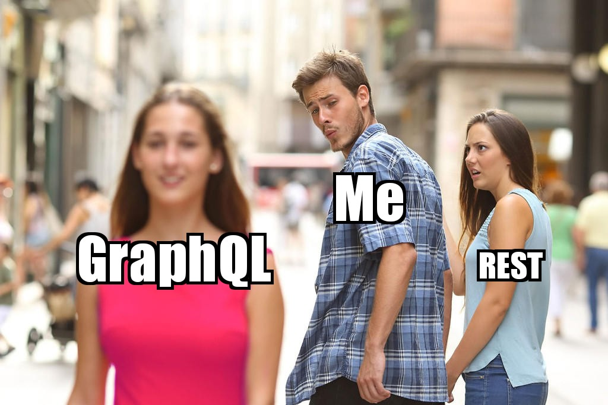
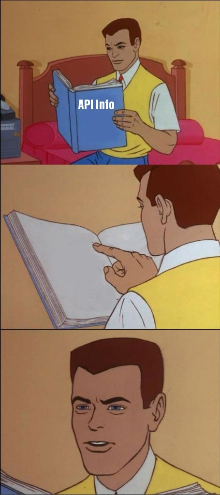
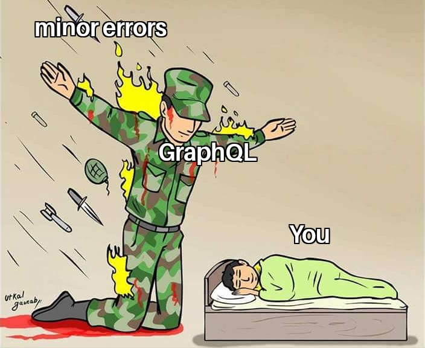
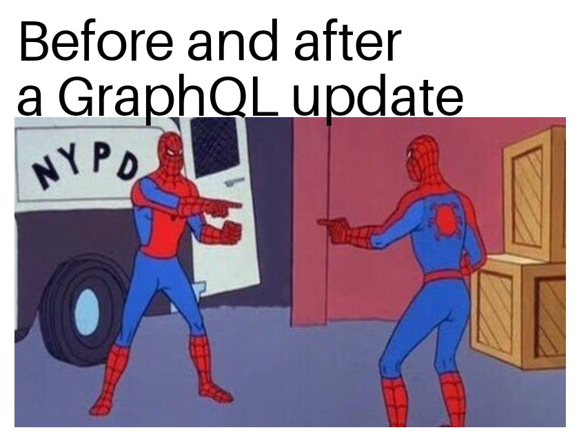
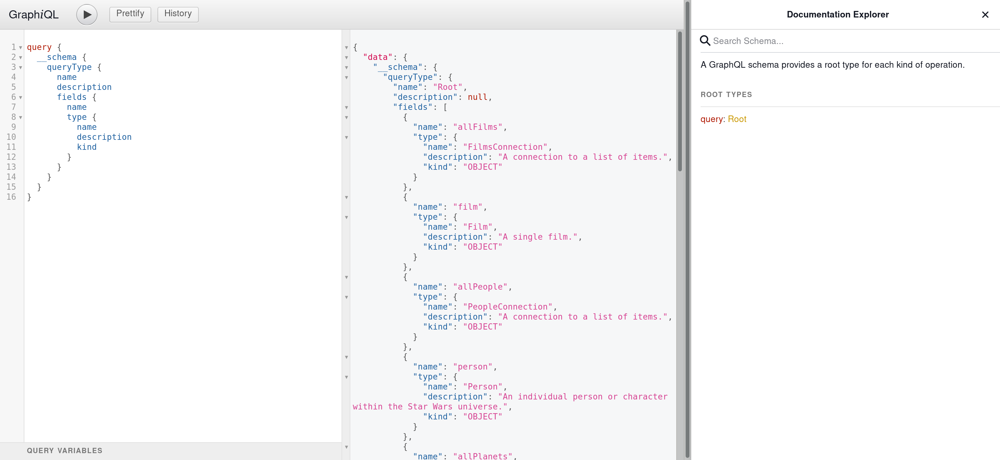
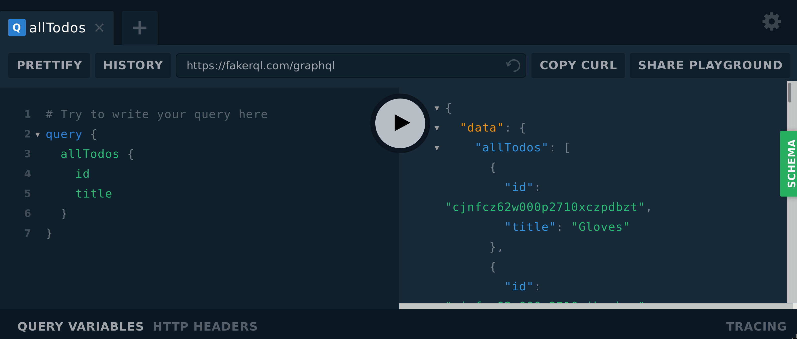

REST is Dead
Long Live GraphQL
@rtward
github.com/rtward
github.com/rtward/GraphQL-Talk
github.com/chentsulin/awesome-graphql
Intro
whoami
- Founder / CTO at Juristat
- Founding memeber of Arch Reactor Hackerspace
- Co-organizer of the STL2600 / DC314 meetup
- Gave a talk last year called Going Commando
Why am I talking to you?
- REST is Terrible
- GraphQL is Better
Why should you listen to me?
- Juristat runs on GraphQL
- Multi-database API
- Very complex data
Examples
Star Wars API
- REST - https://swapi.co/api
- GraphQL - https://graphql.org/swapi-graphql/
What is GraphQL?
- Graph Query Language
- A system for requesting data from an API
- Transport independent
- Most commonly used over HTTP/S
Anatomy of a GraphQL Query
query GetPlanet($idOne:ID $idTwo:ID) { planet(id:$idOne) { name terrains } planetTwo: planet(id:$idTwo) { name terrains }}POST - https://data.api/graphql
{
"query": "
query GetPlanet($id:ID) {
planet(id:$id) {
name
terrains
}
}
",
"variables": { "id": "cGxhbmV0czox" }
}
GET - https://graphql.github.io/swapi-graphql/?
query=query%20GetPlanet(%24id%3AID)%20%7B%0A%20%20
planet(id%3A%24id)%20%7B%0A%20%20%20%20name%0A%20
%20%20%20terrains%0A%20%20%7D%0A%7D&operationName
=GetPlanet&variables=%7B%20%22id%22%3A%20%22cGxhbm
V0czox%22%20%7D
{
"data": {
"planet": {
"name": "Tatooine",
"terrains": [
"desert"
]
}
}
}
Who's using it?
- GitHub
- Pintrest
- Coursera
- The New York Times
- Juristat
Why does REST suck?
Introspection

Introspection - REST Sucks
Introspection - GraphQL is Better

query {
__schema {
queryType {
name
description
fields {
kame
type {
name
description
kind
}
}
}
}
}
{
"data": {
"__schema": {
"queryType": {
"name": "Root",
"description": null,
{
"name": "film",
"type": {
"name": "Film",
"description": "A single film.",
"kind": "OBJECT"
}
}
]
}
}
}
}
query {
__type(name:"Film") {
fields {
name
type {
name
description
}
description
}
}
}
{
"data": {
"__type": {
"fields": [
{
"name": "title",
"description": "The title of this film.",
"type": {
"name": "String",
"description": "The `String` scalar type represents textual data, represented as UTF-8 character sequences. The String type is most often used by GraphQL to represent free-form human-readable text."
}
},
{
"name": "episodeID",
"description": "The episode number of this film.",
"type": {
"name": "Int",
"description": "The `Int` scalar type represents non-fractional signed whole numeric values. Int can represent values between -(2^31) and 2^31 - 1. "
}
},
]
}
}
}
Predictability

Predictability - REST Sucks
https://swapi.co/api/vehicles/4/
{
"name": "Sand Crawler",
"model": "Digger Crawler",
"manufacturer": "Corellia Mining Corporation",
"cost_in_credits": "150000",
"length": "36.8",
"max_atmosphering_speed": "30",
"crew": "46",
"passengers": "30",
"cargo_capacity": "50000",
"consumables": "2 months",
"vehicle_class": "wheeled",
"pilots": [],
"films": [
"https://swapi.co/api/films/5/",
"https://swapi.co/api/films/1/"
],
"created": "2014-12-10T15:36:25.724000Z",
"edited": "2014-12-22T18:21:15.523587Z",
"url": "https://swapi.co/api/vehicles/4/"
}
Predictability - GraphQL is Better
query {
film(id:"cGVvcGxlOjE=") {
title
director
}
}
{
"data": {
"film": {
"title": "A New Hope",
"director": "George Lucas"
}
}
}
Errors

Errors - REST Sucks
https://swapi.co/api/vehicles/1/
HTTP 404 NOT FOUND
Content-Type: application/json
Vary: Accept
Allow: GET, HEAD, OPTIONS
{ "detail": "Not found" }
Errors - GraphQL is Better

query {
film(id:"cGVvcGxlOjE=") {
title
director
}
tragedyOfDarthPlagueis {
theStory
}
}
{
"data": {
"film": {
"title": "A New Hope",
"director": "George Lucas"
},
"tragedyOfDarthPlagueis": null,
},
"errors": [
{
"path": [ "tragedyOfDarthPlagueis" ],
"message": "Not a story the Jedi would tell you"
}
]
}
Docs

Docs - REST Sucks
Docs - GraphQL is Better
Specificity

Specificity - REST Sucks
https://swapi.co/api/people/1/
{
"name": "Luke Skywalker",
"height": "172",
"mass": "77",
"hair_color": "blond",
"skin_color": "fair",
"eye_color": "blue",
"birth_year": "19BBY",
"gender": "male",
"homeworld": "https://swapi.co/api/planets/1/",
"films": [
"https://swapi.co/api/films/2/",
"https://swapi.co/api/films/6/",
"https://swapi.co/api/films/3/",
"https://swapi.co/api/films/1/",
"https://swapi.co/api/films/7/"
],
"species": [
"https://swapi.co/api/species/1/"
],
"vehicles": [
"https://swapi.co/api/vehicles/14/",
"https://swapi.co/api/vehicles/30/"
],
"starships": [
"https://swapi.co/api/starships/12/",
"https://swapi.co/api/starships/22/"
],
"created": "2014-12-09T13:50:51.644000Z",
"edited": "2014-12-20T21:17:56.891000Z",
"url": "https://swapi.co/api/people/1/"
}
Specificity - GraphQL is Better

query {
person(id:"cGVvcGxlOjE=") {
name
}
}
{
"data": {
"person": {
"name": "Luke Skywalker"
}
}
}
https://swapi.co/api/people/1/https://swapi.co/api/people/2/https://swapi.co/api/people/3/
query {
luke: person(id:"cGVvcGxlOjE=") { name }
c3p0: person(id:"cGVvcGxlOjI=") { name }
r2d2: person(id:"cGVvcGxlOjM=") { name }
}
{
"data": {
"luke": { "name": "Luke Skywalker" },
"c3p0": { "name": "C-3PO" },
"r2d2": { "name": "R2-D2" }
}
}
Timelyness
Timelyness - REST Sucks

POST https://service.api/my-stuff - 202GET https://service.api/my-stuff - 404GET https://service.api/my-stuff - 404GET https://service.api/my-stuff - 404GET https://service.api/my-stuff - 200 - Here it isTimelyness - GraphQL is Better
subscription {
update { type message }
}
Updates

Updates - REST Sucks
Updates - GraphQL is Better
Okay, you're convinced.
How to get started?

Clients
GraphiQL
GraphQL Playground
Plain HTTP/S Calls
curl "https://graphql.github.io/swapi-graphql/?
query=query%20GetPlanet(%24id%3AID)%20%7B%0A%20%20
planet(id%3A%24id)%20%7B%0A%20%20%20%20name%0A%20
%20%20%20terrains%0A%20%20%7D%0A%7D&operationName
=GetPlanet&variables=%7B%20%22id%22%3A%20%22cGxhbm
V0czox%22%20%7D"
Relay
- Used with React
- Automatic batching
- Automatic caching
Apollo
- Used with React primarily
- Can be used indpendently
- Has proprietry features with Apollo server
- Automatic batching
- Automatic caching
Servers
Node.js
- Refrence implementation is GraphQL.js
- Can build schemas declaratively or programatically
- Easy to integrate
Apollo
- Mostly the same as GraphQL.js
- Includes additional metrics
- Includes additional tooling
- Integrates with Apollo's management software
Example
import {
graphql, GraphQLSchema, GraphQLObjectType, GraphQLString
} from 'graphql';
var schema = new GraphQLSchema({
query: new GraphQLObjectType({
name: 'RootQueryType',
fields: {
hello: {
type: GraphQLString,
description: "Guess what it is!",
resolve() { return 'world'; }
}
}
})
});
var app = express();
app.use('/graphql', graphqlHTTP({ schema: schema }));
app.listen(4000);
POST - https://data.api/graphql
{ "query": "query { hello }" }
{ "data": { "hello": "world" } }
const testing = new GraphQLObjectType({
name: 'TestingType',
fields: {
sequence: {
type: new GraphQLList(GraphQLInt),
description: "Prints out some numbers",
args: {
howMany: { type: new GaphQLNonNull(GraphQLInt) },
},
resolve(parent, args) {
return Array(args.howMany)
}
}
}
});
POST - https://data.api/graphql
{ "query": "query { testing { sequence(howMany:5) } }" }
{ "data": { "testing": [0, 1, 2, 3, 4] } }
const graphql = require('graphql');
const express = require('express');
const graphlHTTP = require('express-graphql');
const {
GraphQLSchema,
GraphQLObjectType,
GraphQLString,
GraphQLList,
GraphQLInt,
GraphQLNonNull,
} = graphql;
var schema = new GraphQLSchema({
query: new GraphQLObjectType({
name: 'RootQueryType',
fields: {
hello: {
type: GraphQLString,
description: "Guess what it is!",
resolve() { return 'world'; }
},
testing: {
type: new GraphQLObjectType({
name: 'TestingType',
fields: {
sequence: {
type: new GraphQLList(GraphQLInt),
description: "Prints out some numbers",
args: {
howMany: { type: new GraphQLNonNull(GraphQLInt) },
},
resolve(parent, args) {
return [...Array(args.howMany)].map((val, idx) => idx);
}
}
}
}),
resolve() { return true; },
}
}
})
});
const app = express();
app.use('/graphql', graphlHTTP({ schema, graphiql: true }));
app.listen(4000);
console.log('GraphQL server started at localhost:4000/graphql');
Security Implications
Authentication / Authorization
Resolvers
query {
user(id: 5) { name email }
}
{
"data": { "user": { "name": "Alice", "email": null }
"errors": [
{
"path": ["user", "email"],
"message": "You do not have permission to view that user's email"
}
]
}
query {
messages {
from { name email }
to { name email }
message
}
}
{
"data": {
"messages": [
{
"message": "Yo",
"from": {
"name": "Alice",
"email": "alice@secret.com"
},
"to": {
"name": "Bob",
"email": "bob@secret.com"
},
]
}
}
General Advice
Start Slow
Write Docs
Add, Don't Change
Think in Graphs
Thanks!
Special thanks to Joe Cathell and my wife Kim for helping me prep this talk
If you have feedback, please let me know!
@rtwardgithub.com/rtward
github.com/rtward/GraphQL-Talk
github.com/chentsulin/awesome-graphql